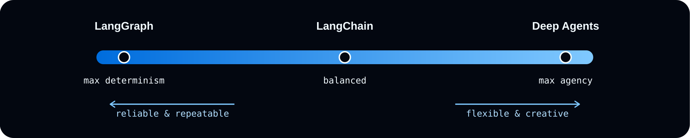

Tempo de leitura: 8 minutos. Autor: Hugo S. Nascimento.
Contexto: Equipes de engenharia que adotam a stack pós-1.0 da LangChain frequentemente tratam LangChain, LangGraph e Deep Agents como ferramentas concorrentes. Na prática, o debate sobre langchain vs langgraph ganha outro sentido quando entendemos que eles formam três camadas empilhadas, cada uma equilibrando nível de abstração e controle determinístico. Com base no guia oficial da LangChain e nas implantações corporativas da hsnlabs no Brasil, detalho aqui quando escolher cada camada em produção.
Resumo executivo para lideranças de tecnologia: LangGraph, LangChain e Deep Agents não são alternativas excludentes. O LangGraph atua como o runtime durável de agentes, entregando determinismo máximo sobre transições de estado, alçadas e persistência. O LangChain é o framework enxuto que padroniza o loop central de ferramentas com ganchos de middleware. O Deep Agents entrega um harness completo e opinativo sobre esse mesmo loop, trazendo sistema de arquivos, subagentes, skills e memória prontos para uso. Escolher a camada errada desperdiça meses reconstruindo gestão de contexto ou introduz autonomia probabilística em fluxos financeiros e fiscais que exigem precisão absoluta.
Nota de diligência e especificações técnicas
As fronteiras arquiteturais, métricas operacionais e definições de produto analisadas nesta publicação seguem a documentação oficial da LangChain e fontes técnicas primárias:
- Comparativo oficial da stack LangChain: detalhando a filosofia das três camadas, a telemetria real do agente de GTM e o espectro entre determinismo e autonomia, publicado em Deep Agents, LangChain, and LangGraph em novembro de 2026.
- Documentação de runtime com estado do LangGraph: especificando execução durável, topologias cíclicas, tolerância a falhas e interrupções Human-in-the-Loop, disponível em LangGraph Technical Documentation.
- Referência de agentes e middleware do LangChain: detalhando
create_agent, conectores de ferramentas e ganchos de ciclo de vida, disponível em LangChain Documentation. - Prática de engenharia LangChain e LangGraph da hsnlabs: padrões de arquitetura corporativa para agentes com estado e ontologias operacionais, disponível em Engenharia de produção LangChain e LangGraph da hsnlabs.
1. As três camadas da stack pós-1.0: runtime, framework e harness
Na geração pós-1.0 do ecossistema, os três projetos open source compartilham o mesmo princípio: a equipe de engenharia deve deter controle total sobre o modelo escolhido, o contexto enviado na janela e o harness que executa o agente. Em vez de impor um único padrão rígido, a arquitetura separa responsabilidades em três camadas combináveis:
| Camada arquitetural | Papel na stack | Ponto de entrada | Modelo de contexto e controle | Melhor encaixe corporativo |
|---|---|---|---|---|
| LangGraph | Runtime de agente | StateGraph customizado |
Controle máximo e abstração mínima; regras de negócio codificadas diretamente em nós e arestas | Fluxos regulados, integração com ERPs e pipelines que misturam código fixo com etapas de IA |
| LangChain | Framework de agente | create_agent com middleware |
Loop mínimo e sem opiniões rígidas; engenharia define ferramentas, prompts e travas exatas | Assistentes sensíveis a latência, harnesses proprietários e fluxos delimitados de busca |
| Deep Agents | Harness de agente | create_deep_agent |
Autonomia máxima com engenharia de contexto pronta via arquivos, subagentes, skills e memória | Pesquisa de contas, preparação comercial, assistência de código e rotinas assíncronas longas |
Por baixo dos panos, existe uma hierarquia clara de execução. O LangGraph é o motor de base responsável por persistência durável, streaming, recuperação de falhas e pausas para aprovação humana. Tanto a abstração create_agent do LangChain quanto o create_deep_agent do Deep Agents compilam e rodam sobre grafos do LangGraph.

Esse loop central é propositalmente enxuto. O modelo recebe uma solicitação, dispara uma ação nas ferramentas conectadas, analisa a observação retornada e repete o ciclo até concluir a resposta. O Deep Agents usa exatamente esse mesmo loop, porém empacota um conjunto opinativo de middlewares voltados para engenharia de contexto em tarefas longas:
- Sistema de arquivos: lê e grava artefatos intermediários fora da janela principal do modelo, evitando saturação de tokens.
- Subagentes: delega investigações especializadas em ciclos isolados sem poluir o histórico principal da conversa.
- Skills: carrega instruções específicas e scripts operacionais sob demanda, em vez de inflar o prompt de sistema desde o início.
- Memória persistente: preserva preferências, histórico de relacionamento e aprendizados entre execuções distintas.
 Runtime durável de grafos que sustenta fluxos customizados no LangGraph, loops create_agent no LangChain e harnesses no Deep Agents.
Runtime durável de grafos que sustenta fluxos customizados no LangGraph, loops create_agent no LangChain e harnesses no Deep Agents.
2. Equilibrando determinismo e autonomia em produção
Toda arquitetura de agentes em produção precisa resolver uma troca inevitável entre autonomia e confiabilidade. Quanto maior a liberdade do modelo para planejar, ramificar chamadas e encadear ferramentas, maior o potencial criativo em tarefas ambíguas, porém maior também a variância de latência, risco operacional e consumo de tokens.

Na engenharia corporativa brasileira, a decisão arquitetural correta começa definindo onde a regra determinística é inegociável e onde o raciocínio probabilístico realmente gera margem:
- Determinismo estrutural no LangGraph: quando um processo exige obediência estrita a alçadas financeiras, trilha fiscal ou regras da LGPD, codificar as transições na topologia do
StateGraphelimina o improviso do modelo. O agente não consegue pular uma etapa de validação porque a aresta simplesmente não existe no grafo. - Governança ao redor do loop com middleware no LangChain: muitas operações funcionam bem dentro do loop padrão de ferramentas, desde que existam travas previsíveis ao redor de cada chamada. O middleware do LangChain injeta ganchos determinísticos para resumir histórico antes do limite de contexto, validar schemas de saída, mascarar CPF ou dados pessoais sensíveis antes de enviar ao provedor de IA e pausar a execução para aprovação humana.
- Autonomia em escala no Deep Agents: quando o caminho até a resposta não pode ser roteirizado previamente, como consolidar dossiês comerciais ou investigar incidentes em código, o Deep Agents permite que o agente gerencie seu próprio horizonte de pesquisa via subagentes e arquivos temporários.
| Vetor de governança | Grafo customizado no LangGraph | LangChain com middleware | Harness Deep Agents |
|---|---|---|---|
| Superfície de controle | Nós explícitos, arestas condicionais e contratos tipados de estado | Loop padrão protegido por ganchos determinísticos antes e depois de cada passo | Harness opinativo gerenciando arquivos, memória, skills e subagentes |
| Previsibilidade de custo em reais | Alta; chamadas ao LLM ficam restritas a nós específicos e curtos | Moderada; controlada pelo limite de iterações e sumarização em middleware | Variável; subagentes em paralelo e loops longos multiplicam o gasto em reais |
| Perfil de latência e SLA | Previsível e baixa quando decisões de roteamento rodam em código puro | Ajustável para canais síncronos como WhatsApp com seleção enxuta de ferramentas | Orientado à profundidade em execuções assíncronas e segundo plano |
| Conformidade e auditoria | Garantida por máquina de estados em código e validação estrita de payload | Garantida por travas de middleware, mascaramento LGPD e pausas de aprovação | Governada por isolamento de arquivos, regras de skills e rastros no LangSmith |
[Agentes] x [a Gente] — Fora do hype, discutimos como Agentic AI multiplica e alavanca a capacidade laboral humana. Análises quinzenais publicadas na newsletter de Hugo S. Nascimento no LinkedIn com mais de 1.600 assinantes. Acompanhar no LinkedIn ↗
3. Quando usar cada camada em operações corporativas
A recomendação prática publicada pela própria LangChain segue uma regra direta: comece pelo Deep Agents se precisa de um agente autônomo completo desde o primeiro dia, desça para o LangChain quando precisar de um loop enxuto ou harness sob medida e adote o LangGraph sempre que a lógica do negócio exigir um fluxo determinístico ou híbrido.
Deep Agents: harness completo para tarefas abertas e pesquisa profunda
Use create_deep_agent quando o principal desafio do projeto é engenharia de contexto em investigações longas. No caso real documentado pela LangChain, seu agente interno de GTM roda sobre deepagents com memória individual por executivo de contas, skills padronizadas para preparação de QBR e subagentes que cruzam transcrições de chamadas, notícias e histórico do CRM.
Essa operação processa cerca de 10 mil requisições por semana para mais de 150 usuários ativos, sendo apenas 26 por cento iniciadas diretamente no chat e 74 por cento disparadas de forma ambiente por eventos e agendamentos no LangSmith. No mercado brasileiro, o mesmo padrão se aplica a pesquisa pré-reunião no B2B, cruzamento de dados públicos de CNPJ com histórico no CRM e revisão assistida de código, exigindo apenas teto rígido de tokens em reais para rotinas em lote não dispararem a fatura mensal.
LangChain: loop enxuto e controle fino de contexto por middleware
Use create_agent quando arquivos temporários e delegação para subagentes adicionam peso desnecessário. Canais síncronos sensíveis a latência, como atendimento corporativo via WhatsApp integrado a catálogo ou base documental, precisam de controle exato sobre quais ferramentas e trechos entram no prompt a cada turno.
Um exemplo clássico é o assistente de perguntas e respostas sobre documentação interna via busca vetorial. O modelo consulta a base, verifica se a evidência responde ao usuário e encerra o ciclo sem precisar de memória entre sessões nem subagentes. Vale reforçar também que nem todo atendimento precisa de loop agêntico autônomo, distinção arquitetural que detalhamos em Chatbot vs agente: quando fluxos determinísticos vencem loops autônomos.
LangGraph: topologia determinística para fluxos regulados e ERPs
Use LangGraph quando o processo combina extração pontual por LLM com regras rígidas de negócio, ou quando sua equipe já mantém um grafo cuja estrutura representa a inteligência operacional da empresa. O guia da LangChain ilustra esse padrão com uma esteira de análise de locação imobiliária em três etapas:
- Etapa 1: um modelo de linguagem extrai renda, histórico de crédito e referências dos documentos enviados, sem nenhuma ferramenta de escrita ativa.
- Etapa 2: código determinístico calcula a pontuação do candidato segundo critérios objetivos da política de risco.
- Etapa 3: roteamento fixo aprova automaticamente perfis elegíveis, recusa perfis fora da política e encaminha casos limítrofes para revisão humana.
Apenas a leitura documental toca o modelo probabilístico; a decisão financeira permanece auditável em código. Em empresas brasileiras operando sobre SAP, TOTVS Protheus, conferência de NF-e, conciliação bancária e alçadas de pagamento via PIX, esse desenho se integra diretamente a contratos tipados de execução, padrão que aprofundamos em Como construir uma ontologia operacional em Python e MCP.
Composabilidade entre as três camadas em produção
Escolher uma camada não bloqueia o uso das demais. Os três pacotes são totalmente combináveis e compartilham deploy e observabilidade unificados no LangSmith:
flowchart TD
A["Requisição ou evento corporativo<br>Mensagem no WhatsApp, webhook de ERP ou rotina agendada"] --> B["StateGraph principal no LangGraph<br>Roteamento determinístico, travas LGPD e checkpoints duráveis"]
B --> C["Nó create_agent no LangChain<br>Loop de baixa latência com middleware de validação"]
B --> D["Subagente no Deep Agents<br>Arquivos, skills, memória e pesquisa multi-etapas"]
C --> E["Observabilidade e deploy no LangSmith<br>Rastreamento ponta a ponta, avaliações e escala em produção"]
D --> ENa prática, um StateGraph corporativo pode usar um nó create_agent para triagem rápida em milissegundos no WhatsApp, acionar código determinístico para validar limites no ERP e delegar apenas investigações complexas para um subagente em create_deep_agent, mantendo rastreabilidade única no LangSmith.
| Cenário operacional no Brasil | Camada recomendada | Justificativa arquitetural |
|---|---|---|
| Pesquisa de contas B2B, preparação de QBR ou agente de código | Deep Agents | Aproveita subagentes, skills sob demanda, memória e descarga de contexto sem código repetitivo |
| Atendimento técnico via WhatsApp com SLA curto de resposta | LangChain | Menor sobrecarga por turno e controle cirúrgico de ferramentas e tokens enviados ao modelo |
| Análise de crédito, conciliação de NF-e, ERP e alçadas PIX | LangGraph | Isola a extração documental com IA da pontuação determinística e das aprovações humanas |
| Plataforma corporativa unindo compliance rígido e pesquisa aberta | Stack composta | LangGraph governa o estado externo e gravações no ERP enquanto delega subtarefas ao LangChain ou Deep Agents |
4. Evolução da arquitetura e critérios práticos de migração
Entender a cronologia da stack evita decisões reativas na escolha de ferramentas:
- Outubro de 2022 · LangChain: surgiu para acelerar a criação de aplicações e cadeias sobre modelos de linguagem.
- Janeiro de 2024 · LangGraph: nasceu como runtime baseado em grafos para entregar execução durável, streaming e aprovações humanas nativas quando cadeias simples não davam mais conta.
- Padronização pós-1.0 ·
create_agent: consolidou o loop padrão de modelo e ferramentas como abstração mínima e extensível por middleware sobre o motor do LangGraph. - Julho de 2025 · Deep Agents: inspirado em referências como Claude Code e Manus, empacotou as melhores práticas de engenharia de contexto diretamente sobre o loop central.
Para equipes que já operam fluxos em produção no Brasil, o critério de migração deve ser pragmático. Permaneça no LangGraph se a confiabilidade do negócio depende da forma explícita do grafo, das travas de LGPD e das etapas determinísticas em código. Migre trechos altamente agênticos para o Deep Agents apenas se o seu grafo atual virou um loop ReAct mantido manualmente, onde a engenharia gasta tempo reinventando sumarização de contexto, prompts extensos e roteamento improvisado de subagentes. Em qualquer camada escolhida, conecte todas as execuções à telemetria e às suítes de avaliação do LangSmith antes de escalar o tráfego.
Recursos estratégicos e leituras relacionadas
- Engenharia de produção LangChain e LangGraph da hsnlabs
- Chatbot vs agente: fronteiras arquiteturais em produção
- Como construir uma ontologia operacional em Python e MCP
- Braintrust Evals e LangGraph: substituindo testes manuais por CI/CD determinístico
Artigo publicado originalmente em hsnlabs. Autor: Hugo S. Nascimento.